Basic Part Design Tutorial 019/ja
| Topic |
|---|
| Modeling |
| Level |
| Beginner |
| Time to complete |
| 1 hour |
| Authors |
| Carlo Dormeletti (onekk) Ed Williams (edwilliams16) Roy 043 (Roy 043) |
| FreeCAD version |
| 0.19 or higher |
| Example files |
| None |
| See also |
| Basic Part Design Tutorial |
Introduction
This is an updated version of the Basic Part Design Tutorial.

This tutorial introduces users to the Part Design Workbench. In this tutorial we will create a 3D solid model of the part shown in the image above. In the drawing at the end of this paragraph all the necessary dimensions to complete the task are given.
We will start by creating a core solid shape from a base Sketch and then build on that shape, adding what are known as features. These features will either add material to, or remove material from the solid by use of additional sketches and accompanying feature operations.
We will follow some of the techniques described in Advice for creating stable models:
- We will use a master sketch.
- Named constraints will be used to hold dimensions that can be referenced later in the model construction.
For instance, to change the model width from 53 mm, as in the technical drawing, to 55 mm we need only modify the Length value of the appropriate named constraint in the master sketch and the whole model will modify accordingly. This is parametric design in action. - External geometries are potentially subject to the Topological Naming Problem. We will use them only when strictly necessary and will attempt to reference to the most stable elements available. Referencing edges and vertices of sketches is normally more stable than referencing edges and vertices of generated solid geometry.
This Tutorial will not use every feature and tool available in the Part Design Workbench, but will provide a basic foundation upon which users can build their knowledge and skills.
Feel free to signal any errors or problems in this forum thread: New Part Design Tutorial for FC 019 and 020.
{kind=link}
Preliminary notes
- This tutorial will provide detailed instructions when it describes an operation for the first time. Subsequent operations will have a more concise description. When in doubt, find the operation that contains the more detailed description. For instance, when creating a sketch for the first time the process of choosing the sketch plane will be explained in detail, for subsequent sketches it will not.
- All mentioned tools can be accessed from toolbars and from the menu.
- This tutorial assumes that
 Auto constraints in the Sketcher's Edit controls window is checked. This ensures that some constraints are applied automatically. Otherwise you will need to apply them yourself.
Auto constraints in the Sketcher's Edit controls window is checked. This ensures that some constraints are applied automatically. Otherwise you will need to apply them yourself. - If the Sketcher Solver detects a redundant constraint it will turn the sketch orange in color. Before further constraints are added, redundant constraints should be removed. Redundant constraints are shown in the task panel, click the blue reference and press Delete.
- The color mentioned above is a default color, it can be changed in the preferences. The same applies to the other colors mentioned in this tutorial.
- You exit a Sketcher drawing tool by pressing the Esc key or by right-clicking an empty area of the 3D view. The mouse cursor will change to the standard arrow cursor. If you press Esc an additional time you will exit sketch edit mode. To return to the editor, click the Model tab, then either double-click the Sketch element in the Tree view, or right-click it and select Edit sketch from the context menu. To avoid leaving edit mode when pressing Esc too often, change the Esc can leave sketch edit mode preference, see Sketcher Preferences.
- It's possible that some elements in a task panel, for instance the OK button, are not visible if the panel is not wide enough. You can make it wider by dragging its right border. Place your mouse pointer over the border, when the pointer changes to a two-way arrow, hold down the left mouse button and drag.
- A >> button in a toolbar indicates that the toolbar is truncated. You can either use the mentioned button to expand it, or move the toolbar to a position where more room is available. To move a toolbar place your mouse pointer over the grip before the first icon in the toolbar, hold down the left mouse button and drag.
- During the v0.21 development cycle a new icon was introduced for the Sketcher Create polyline tool:
 . The old icon looks like this: . In this tutorial we will use the new icon.
. The old icon looks like this: . In this tutorial we will use the new icon. - See Part Design Workbench Concepts for some conceptual background.
- See the Sketcher WorkBench for a more detailed explanation of some of the terminology used here.
Startup
First make sure you are in the  Part Design Workbench. If required select it from the Workbench dropdown list. Once there, you will want to create a new document if you have not done so already. It is a good habit to save your work often, so first save the new document, giving it any name you choose.
Part Design Workbench. If required select it from the Workbench dropdown list. Once there, you will want to create a new document if you have not done so already. It is a good habit to save your work often, so first save the new document, giving it any name you choose.
All work in Part Design begins with a body. Click  Create new body to create and activate one. Note that it is also possible to skip this step: when creating a sketch using the Part Design
Create new body to create and activate one. Note that it is also possible to skip this step: when creating a sketch using the Part Design  Create sketch tool, if no existing body is found, a new one is automatically created and activated.
Create sketch tool, if no existing body is found, a new one is automatically created and activated.
Master sketch
The master sketch contains the model's rectangular base shape and two named constraints that will supply correct dimensions to other parts of the model: length that will contain 53 mm (the result of adding the 39 mm dimension to the two 7 mm sides), and width that will contain 26 mm. To be able to take advantage of the model's symmetry in later steps, the top edge of the rectangle will be centered around the origin with a symmetrical constraint.
Sketch
{kind=link}
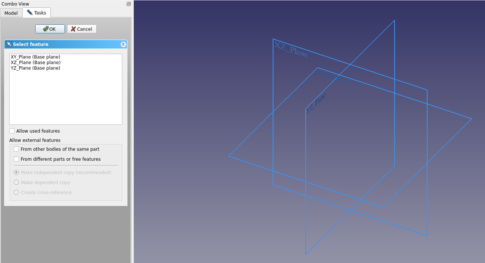
{kind=link}
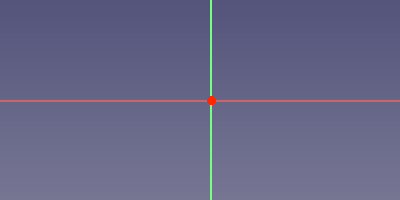
{kind=link}
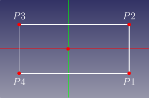
{kind=link}
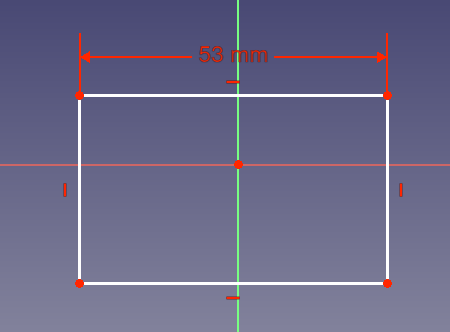
{kind=link}
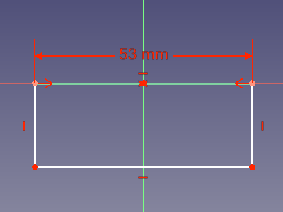
{kind=link}
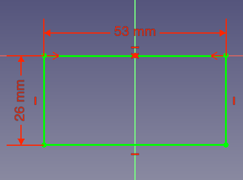
Step A: Create the sketch
- Click
 Create sketch. This will create the sketch within the just created body. It will be named Sketch.
Create sketch. This will create the sketch within the just created body. It will be named Sketch. - A task panel like Fig: MS1 will open where you have to choose to which plane the sketch will be attached.
- Select XY_Plane from the list or select that plane in the 3D view.
- Click OK.
- FreeCAD automatically switches to the
 Sketcher Workbench.
Sketcher Workbench. - The sketch is opened in edit mode: you will see something like Fig: MS2. The X axis (the red line) and Y axis (the green line) of the sketch are indicated, as well as its origin (the red point). Click
 Fit All if you don't see the axes.
Fit All if you don't see the axes.
Step B: Add geometry
- Click
 Create rectangle.
Create rectangle. - While the tool is active the cursor has this appearance:
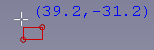
- Pick two points to create a rectangle roughly centered around the Y axis similar to Fig: MS3. Note:
- Don't place points on an axis as the Solver will automatically apply constraints that will create problems later.
- The dimensions of the rectangle are unimportant at this point. They will be assigned using constraints in a later step.
- Once done, press Esc or right-click to exit the tool.
{kind=link}
Step C: Assign a horizontal distance constraint
- Select the line defined by P2 and P3 in Fig: MS3. The labels like P1, P2 etc. will not appear in sketches, they were added for reference in the images of this tutorial.
- Click
 Horizontal distance constraint:
Horizontal distance constraint:
- A dimension will appear between the endpoints of the selected line. This dimension is the current distance.
- Additionally a dialog will appear:
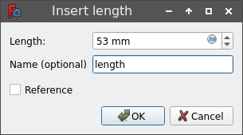
- Assign Length = 53 mm.
- To be able to reference this dimension later a name is required. You are free to use any name, it need only be unique within the sketch. Assign Name = length.
- Click OK.
- The result should resemble Fig: MS4
{kind=link}
Step D: Assign a symmetrical constraint
- Select points P2 and P3 of the rectangle.
- Select the origin of the sketch. Note: the selection order of the points is important.
- Click
 Symmetrical constraint.
Symmetrical constraint. - You will end up with something that resembles Fig: MS5.
Step E: Assign a vertical distance constraint
- Assign a vertical distance constraint following the same procedure as used for the previous horizontal distance constraint:
- Select the line defined by P3 and P4 in Fig: MS3.
- Click
 Vertical distance constraint:
Vertical distance constraint:
- Assign Length = 26 mm
- Assign Name = width.
- Click OK.
- The result should resemble Fig: MS6.
- The sketch is fully constrained now:
- The lines in the sketch are bright green.
- The Solver messages section of the task panel displays Fully constrained.
- If you select any line or vertex of the sketch and try to drag it, it won't move.
Step F: Close the sketch
- Click Close at the top of the tasks panel to leave sketch edit mode.
Main profile
The main profile is created by padding a new sketch.
Sketch001
{kind=link}
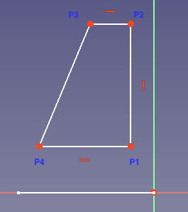
{kind=link}
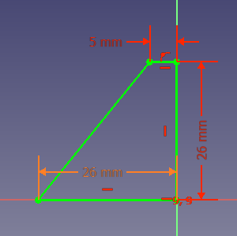
Step A: Create the sketch
- Click Create sketch and create a sketch attached to the YZ_Plane. FreeCAD will assign the name Sketch001.
Step B: Add geometry
- Click Create polyline and make a shape like in Fig: MP1.
- For the last point of the final segment make sure to pick the first point of the shape. The point will change color and you will see the symbol for a
 Coincident constraint appear near the cursor. Coincident constraints have to be explicit. Just having two points visually coincident is not sufficient.
Coincident constraint appear near the cursor. Coincident constraints have to be explicit. Just having two points visually coincident is not sufficient. - Press Esc or right-click to exit the tool.
Step C: Assign constraints
- The three vertical and horizontal constraints you see in the image should have been added automatically provided you drew those lines that way. If you didn't you need to add them.
- Select the point P2 and the Y axis of the sketch and apply a
 Point onto object constraint. Because the sketch is attached to the YZ_Plane, the Y axis of the sketch does not match the Y axis of the body.
Point onto object constraint. Because the sketch is attached to the YZ_Plane, the Y axis of the sketch does not match the Y axis of the body. - Select the origin and the point P1 and apply a
 Horizontal constraint. Why not a Coincident constraint? you might ask. Try it (and undo). The sketch will turn orange and a solver message Redundant constraints will appear. Because the line P1 to P2 has already been constrained to be vertical, the only remaining degree of freedom is P1's Y coordinate. The coincidence constraint sets both the X and Y coordinates to zero, but the X coordinate is already determined. The horizontal constraint, on the other hand, only sets the Y coordinate to zero, which is sufficient.
Horizontal constraint. Why not a Coincident constraint? you might ask. Try it (and undo). The sketch will turn orange and a solver message Redundant constraints will appear. Because the line P1 to P2 has already been constrained to be vertical, the only remaining degree of freedom is P1's Y coordinate. The coincidence constraint sets both the X and Y coordinates to zero, but the X coordinate is already determined. The horizontal constraint, on the other hand, only sets the Y coordinate to zero, which is sufficient. - Select the line defined by the points P2 and P3, apply a Horizontal distance constraint, and assign Length = 5 mm.
- Select the line defined by the points P1 and P2, apply a Vertical distance constraint, and assign Length = 26 mm.
- Select the line defined by the points P1 and P4 and apply a Horizontal distance constraint:
- For this value you will use a named constraint using Expressions. To do so you have to click the little button in the Length input field:
 .
. - You will be presented with a new dialog named Formula editor that contains an input field and a Result: label, similar to the image below:
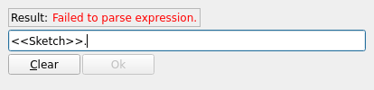
When you start typing in the input field, you will be presented with some autocompletions. - Select the label of the sketch. In our case we want
<<Sketch>>.. Note the period after the label. - To select the named constraint "width", you first have to enter
Constraints.with the period. Here autocomplete works. - To add "width", as yet autocompletion is not available, so complete the cell to read
<<Sketch>>.Constraints.width. If all went well the red error message after Result: has been replaced by the correct value as in the image below: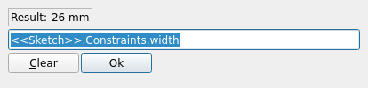
- Click OK to close the Formula editor dialog.
- Click OK to close the Insert length dialog.
- For this value you will use a named constraint using Expressions. To do so you have to click the little button in the Length input field:
- You should have a fully constrained sketch similar to Fig: MP2.
- Note the different colors used for distance constraints assigned using expressions, and those assigned specifying a length.
{kind=link}
{kind=link}
Step D: Close the sketch
- Click Close at the top of the tasks panel to leave sketch edit mode.
Pad
{kind=link}
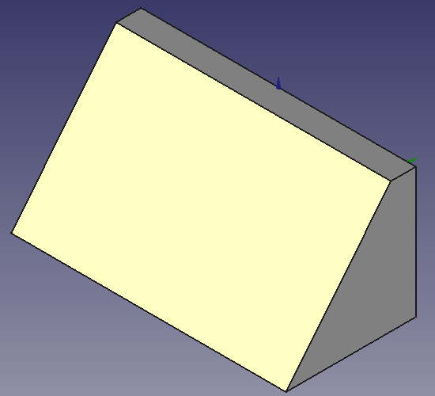
- Make sure Sketch001 is selected.
- Click
 Pad:
Pad:
- The Pad parameters task panel opens.
- For Type select Dimension
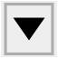
. - For Length again use an expression, but this time enter
<<Sketch>>.Constraints.length. This should evaluate to 53 mm. - Select Symmetric to plane.
- Click OK to close the task panel.
- You should now have a solid as shown in Fig: MP3.
{kind=link}
Corner cutouts
For the corner cutouts two features are added to the model. A pocket, based on another sketch, is used to create the first cutout, and this feature is then mirrored.
Sketch002
{kind=link}
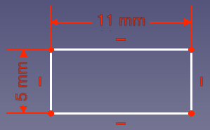
{kind=link}
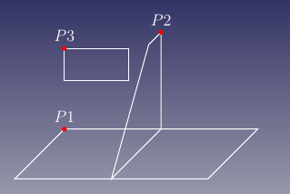
{kind=link}
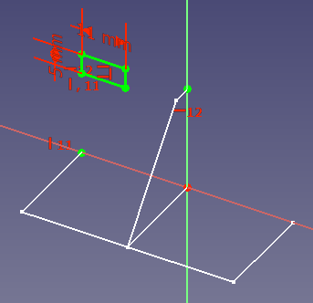
Step A: Hide the solid
- Hide the just created solid: Select Pad and click the Spacebar.
Step B: Create the sketch
- Click Create sketch and create a sketch attached to the XZ_Plane. The sketch will be named Sketch002.
Step C: Add geometry
- Select Create rectangle, and create a rectangle. Do not create it too near an axis, to avoid any automatic constraints that would make it difficult to move it into the correct position later.
- Exit the tool.
Step D: Assign dimensional constraints
- Select one of the horizontal lines, apply a Horizontal distance constraint, and assign a value of 11 mm.
- Select one of the vertical lines, apply a Vertical distance constraint, and assign a value of 5 mm.
- You should obtain something similar to Fig: CC1.
Step E: Close the sketch
- Click Close. Sketch002 is not fully constrained at this stage.
Step F: Make previous sketches visible
- To use external geometry, the sketches whose elements we want to reference must be visible. Make sure Sketch and Sketch001 are both visible. Use the Spacebar to toggle visibility if needed. Expand the Pad node in the Tree view to access Sketch001.
Step G: Add external geometry and fully constrain the sketch
- Double click Sketch002 to enter edit mode.
- Rotate the view so you can clearly see the points as shown in Fig: CC2. This will ease subsequent steps. Note that the rectangle's initial position may be different in your sketch.
- Click
 External geometry.
External geometry. - While the tool is active the cursor has this appearance:
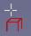
- Select point P1 in Fig: CC2. The selected point is added to the sketch as external geometry. In the Elements section of the task panel it will appear with a purple X icon or, introduced in 0.21, a purple dot icon.
- With the tool still active select point P2 in Fig: CC2. This external geometry should also appear in the Elements section.
- Exit the tool.
- Select point P1 and point P3 and apply a
 Vertical constraint. The rectangle will be aligned with the X position of P1.
Vertical constraint. The rectangle will be aligned with the X position of P1. - Select point P2 and point P3 and apply a Horizontal constraint. The rectangle will be aligned with the Y position of P2.
- You should have a fully constrained sketch similar to Fig: CC3.
{kind=link}
Step H: Close the sketch
- Click Close.
{kind=link}
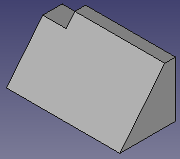
{kind=link}
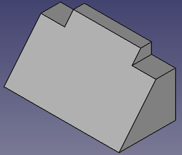
To create the cutouts we will use the  Pocket tool. This tool is the opposite of the Pad tool. Whereas the Pad tool adds material, the Pocket tool removes material.
Pocket tool. This tool is the opposite of the Pad tool. Whereas the Pad tool adds material, the Pocket tool removes material.
- Select Sketch002.
- Click
 Pocket:
Pocket:
- You should have something that resembles Fig: CC4
Mirror
Instead of creating another sketch and pocketing it, we take advantage of the model's symmetry about the YZ plane and use  Mirrored to create the second cutout.
Mirrored to create the second cutout.
- Select Pocket in the Tree view.
- Click
 Mirrored:
Mirrored:
- You should now have a part that looks like Fig: CC5.
Sides
The sides are created in a similar manner, but instead of removing material we will add material with a pad feature.
Sketch003
{kind=link}
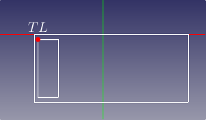
{kind=link}
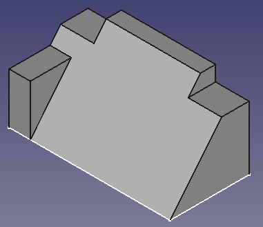
{kind=link}
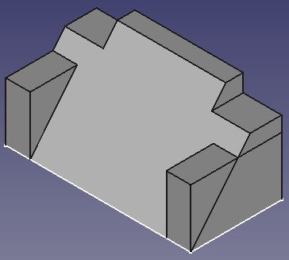
- Make sure Sketch is visible, and Mirrored is hidden.
- Click Create sketch and create a new sketch attached to the XY_Plane. The sketch will be named Sketch003.
- Click Create rectangle and create a rectangle similar to the smaller rectangle in Fig: SD1. Because the rectangle is offset from the X axis this should not trigger an automatic Point onto object constraint.
- Exit the tool.
- Click External geometry.
- Select the point P1 as shown in Fig: CC2 from Sketch.
- Exit the tool.
- Apply these constraints:
- Select one of the horizontal lines, apply a Horizontal distance constraint, and assign a value of 7 mm.
- Select one of the vertical lines, apply a Vertical distance constraint, and assign this expression:
<<Sketch>>.Constraints.width. - Select the top-left point of the created rectangle (marked TL in Fig: SD1) and the newly added external geometry point and apply a Coincident constraint.
- Select one of the horizontal lines, apply a
- The sketch should be fully constrained now.
- Click Close.
Pad001
- Select Sketch003.
- Click Pad:
- You should have a result as shown in Fig: SD2
Mirrored001
- Select Pad001.
- Click Mirrored:
- You should now have a part that looks like Fig: SD3.
Note
Our two mirror operations have a common symmetry plane, so we could have made our model a little simpler by combining them. We would:
- Omit the first Mirror operation.
- Select both Pad001 and Pocket in step 1 of the above Mirrored001 operation.
This emphasizes the important concept that we are mirroring the selected features (the operations we performed on the body, in the selected order), not the body itself.
Center hole
Now it is time for the most challenging part of our modeling, a challenge that arises because some of the dimensions of the center hole are defined along the slanted face. If you use this face, created by padding Sketch001, as a reference for the next sketch, you expose yourself to the Topological Naming Problem. A better solution is to reference Sketch001 itself.
Sketch004
{kind=link}
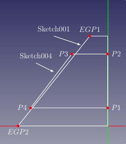
{kind=link}
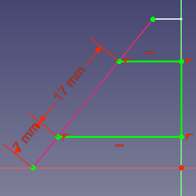
- Make Sketch001 visible, and hide Sketch and Mirrored001.
- Click Create sketch and create a new sketch attached to the YZ_Plane. The sketch will be named Sketch004.
- Click Create polyline and trace a polyline like that indicated by the points P1, P2, P3 and P4 in Fig: CH1.
- Remember to close the polyline by picking the first point. This will create the required Coincident constraint.
- Exit the tool.
- Check the applied constraints:
- Delete the redundant Vertical constraint applied to the line defined by P1 and P2.
- Make sure a Horizontal constraint has been applied to the lines defined by P1 and P4, and P2 and P3.
- Make sure a Point onto object constraint has been applied to P1 and the Y axis, and to P2 and the Y axis.
- Delete the redundant
- Click External geometry
- Select the line defined by EGP1 and EGP2 in Sketch001, indicated by the purple color in Fig: CH2.
- Exit the tool.
- Apply a Point onto object constraint to P3 and the external geometry, and repeat this for P4. This will make the line defined by P3 and P4 coincident with the line defined by EGP1 and EGP2.
- Select the line P3 to P4, apply a
 Distance constraint, and assign Length = 17 mm
Distance constraint, and assign Length = 17 mm - Select the points EGP2 and P4, apply a Distance constraint, and assign Length = 7 mm.
- This will result in a fully constrained sketch like Fig: CH2.
- Click Close.
- Hide Sketch001.
Pocket001
- Select Sketch004.
- Click Pocket:
- Select the newly created Pocket001.
- On the Data tab of the Property editor change its Refine property to True. The property editor can be found on the Model tab of the Combo View.
Notes
- For Pocket001 we could have alternatively used Type Dimension , checked Symmetric to Plane, and entered 17 mm for the Length value.
- Refine will try to remove seams left by previous operations. It is advisable to only refine the final solid, as some operations can fail if a previous feature has been refined. However, there are also cases where refine can make an operation succeed. So in case of problems check this property and test. Unfortunately there is not yet a general rule to follow.
Result
The model is complete. It should look like the image below.
Finally, select Sketch in the Tree view and on the Data tab of the Property editor look for Sketch → Constraints. Expand that node and changed the length and width constraints. The model should change parametrically.
- Helper tools: New Body, New Sketch, Attach Sketch, Edit Sketch, Validate Sketch, Check Geometry, Sub-Shape Binder, Clone
- Modeling tools:
- Additive tools: Pad, Revolution, Additive Loft, Additive Pipe, Additive Helix, Additive Box, Additive Cylinder, Additive Sphere, Additive Cone, Additive Ellipsoid, Additive Torus, Additive Prism, Additive Wedge
- Subtractive tools: Pocket, Hole, Groove, Subtractive Loft, Subtractive Pipe, Subtractive Helix, Subtractive Box, Subtractive Cylinder, Subtractive Sphere, Subtractive Cone, Subtractive Ellipsoid, Subtractive Torus, Subtractive Prism, Subtractive Wedge
- Boolean: Boolean Operation
- Dress-up tools: Fillet, Chamfer, Draft, Thickness
- Transformation tools: Mirror, Linear Pattern, Polar Pattern, Multi-Transform, Scale
- Additional tools: Shape Binder, Involute Gear, Sprocket, Shaft Design Wizard
- Context menu: Suppressed, Set Tip, Move Object To…, Move Feature After…
- Preferences: Preferences, Fine tuning
- 全般： スケッチを作成、スケッチを編集、スケッチをアタッチ、スケッチの方向を変更、スケッチを検証、スケッチをマージ、スケッチを鏡像化、スケッチの編集を終了、スケッチを表示、セクション表示、グリッドの表示を切り替え、スナップの切り替え、レンダリング順を設定、操作を停止
- スケッチャージオメトリー： 点を作成、ポリライン（折れ線）を作成、線分を作成、中心点から円弧を作成、3点指定円弧を作成、楕円弧を作成、双曲線の円弧を作成、放物線の円弧を作成、中心を指定して円を作成、3点で円を作成、中心点を指定して楕円を作成、3点を指定して楕円を作成、長方形を作成、中心配置長方形、角丸長方形、正三角形, 正方形、正五角形、正六角形、正七角形、正八角形、正多角形、長円形を作成、円弧状の長円形を作成、制御点によるBスプライン, 制御点によるBスプライン、制御点によるBスプライン、ノットによる周期的Bスプライン、構築ジオメトリの切り替え
- スケッチャー拘束：
- 寸法拘束： 寸法、水平距離拘束、垂直距離拘束、距離拘束、半径/直径を自動拘束、半径拘束、直径拘束、角度を拘束、ロック拘束
- 幾何拘束： 一致拘束（統合）、一致拘束、点がオブジェクト上にある拘束、水平/垂直拘束、水平拘束、垂直拘束、 並行拘束, 直角拘束、正接拘束または共線拘束、等値拘束、対称拘束、固定拘束
- その他の拘束： 屈折率拘束（スネルの法則）
- 拘束ツール： 駆動拘束/参照拘束の切り替え、駆動拘束/参照拘束の切り替え
- スケッチャーツール フレットを作成、面取りを作成、エッジをトリム、エッジを分割、エッジを延長、外部ジオメトリを作成、カーボンコピーを作成、原点を選択, 水平軸を選択、垂直軸を選択、配列変換, 軸周変換、スケール変換、オフセット、対称、軸方向の拘束を解除、すべてのジオメトリーを削除, すべての拘束を削除
- スケッチャーBスプラインツール： ジオメトリをB-スプラインに変換、Bスプラインの次数を増やす、Bスプラインの次数を減らす、ノット多重度を増やす, ノット多重度を減らす、ノットを挿入、曲線を結合
- スケッチャー表示ツール： 未拘束の自由度を選択、関連する拘束を選択、関連する要素を選択、冗長な拘束を選択、競合する拘束を選択、円弧の補助円を表示/非表示、Bスプライン次数の表示/非表示, Bスプライン制御ポリゴンの表示/非表示、Bスプライン曲率コームの表示/非表示、Bスプラインノット多重度の表示/非表示、Bスプライン制御点重みの表示/非表示、内部ジオメトリの表示/非表示、仮想スペース切り替え
- はじめてみよう
- インストール： ダウンロード、Windowsへのインストール、Linuxへのインストール、Macへのインストール、付加機能のインストール、Dockerでのコンパイル、AppImage、Ubuntu Snap
- 基本： FreeCADについて、ユーザー・インタフェース、Mマウス・ナビゲーション、オブジェクトの選択方法、オブジェクトの名前、設定、ワークベンチ、FreeCADファイルの構造、プロパティ、FreeCADへの貢献、寄付
- ヘルプ： チュートリアル、チュートリアル動画
- ワークベンチ： 共通ツール、アセンブリー、BIM、CAM、ドラフト、FEM、インスペクション、マテリアル、メッシュ、OpenSCAD、 パート、パートデザイン、ポイント、リバースエンジニアリング、ロボット、スケッチャー、スプレッドシート、サーフェス、テックドロー、テストフレームワーク
- 情報ハブ： ユーザー向けハブ、パワーユーザー向けハブ、開発者向けハブ